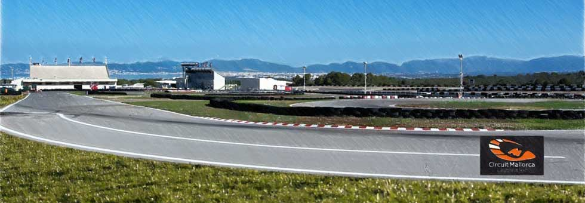
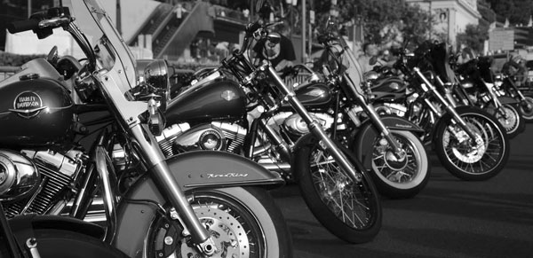

Motero. Es una palabra que en estos días todo el mundo utiliza. Se lee por todas partes, aparece en titulares y en conversaciones de bar. Desde la televisión se habla de ellos, al salir a la calle se ven con su vestimenta características. Son fáciles de identificar y este fin de semana inundan la Bahía: Pero, ¿qué significa ser motero?
«Para mí particularmente y creo que para la mayoría, ser motero significa un estilo de vida, no es solo comprarte una moto, yo creo que el motero nace, no se hace. Es sentir que desde pequeño no solo tienes sangre en las venas, sino que va acompañado de gasolina. El sentir la libertad que te ofrece tu moto, la complicidad que hay entre los dos, maquina y persona, sintiendo todas las sensaciones que trasmite el motor que llevas entre tus manos, creo que explicarlo con palabras es difícil ya que no es solo llevar una moto, es un sentimiento».
Miguel García de Quirós es presidente del club motero Los Tronco Motos, que precisamente estrenan sede durante la Motorada. Nadie mejor que él para explicar esta pasión por las dos ruedas.
Si estás cansado de curvear siempre por tus rutas favoritas, tienes miedo a que los de verde o Pegasus te echen el guante si te pasas con el mango o de que esos que se llaman moteros te hayan dado más de un susto invadiendo tu carril en plena curva… ¡ha llegado el momento de cambiar la carretera por el circuito!
Hay moteros que tienen la inmensa fortuna de tener una economía desahogada y entran varias veces al año al circuito y otros como el autor de estas líneas que, al menos una vez al año, intenta entrar para rodar y quitarse el veneno porque quiero avisaros que, ¡el circuito…engancha!
¿De qué presupuesto estamos hablando?
Esto es como comprar una moto, todas tienen dos ruedas y un manillar… pero, ¿hay motos y motos verdad? Pues en el tema de rodar en circuito es lo mismo, conozco a gente que va y viene en el día con lo justo y rueda por “dos duros” como quien dice y gente que se deja un pastizal al término de la jornada, todo depende de las siguientes preguntas:
¿Dónde rodar?
Circuito de Llucmajor Rennarena

Teléfono 1: 971 446 090
Teléfono 2: 971 446 091
Web: www.mallorcarennarena.com
Email: info@mallorcarennarena.com
Estamos en “febrerillo el loco” lo mismo tenemos un día primaveral, que nos aparece uno de invierno, o dentro de un mismo día pasamos de bajo cero a más de quince grados. No olvides el traje de agua en las alforjas si te alejas de casa.
Os dejo unas recomendaciones:
Con respecto a nosotros abrígate bien, no hace falta llevar muchas prendas, pues con eso lo único que consigues es entorpecer los movimientos. Lo ideal es llevar prendas preparadas, que nos sirvan de aislante del frío, viento o lluvia, que sean cómodas, y a ser posible con protecciones para evitar daños en una caída no deseada.
Con respecto a la moto, no pienses “como voy a hacer pocos kilómetros no hace falta mantenimiento”, revisa las ruedas, sobre todo el dibujo para cuando ruedes con agua y recuerda que si lleva líquido refrigerante le debes de poner algún anticongelante, sobre todo en zonas muy frías, evitarás dañar el motor. Si vas a zonas frías comprueba que la batería no esté muy débil pues el frío acabará con ella. Si decides aventurarte por otro país, revisa bien toda la documentación tanto tuya, como de la motocicleta y no olvides la carta verde del seguro, incluso si te vas a mover por nuestra vecina Portugal pues allí te la exigirán, aunque por Ley de la Comunidad Europea no sea obligatoria. Si es por Francia recuerda llevar chaleco reflectante, allí es obligatorio.

Aquí os dejo un mes más un listado de concentraciones y quedadas moteras, como de costumbre primero pongo las de Extremadura, luego el resto del país y luego las de fuera.